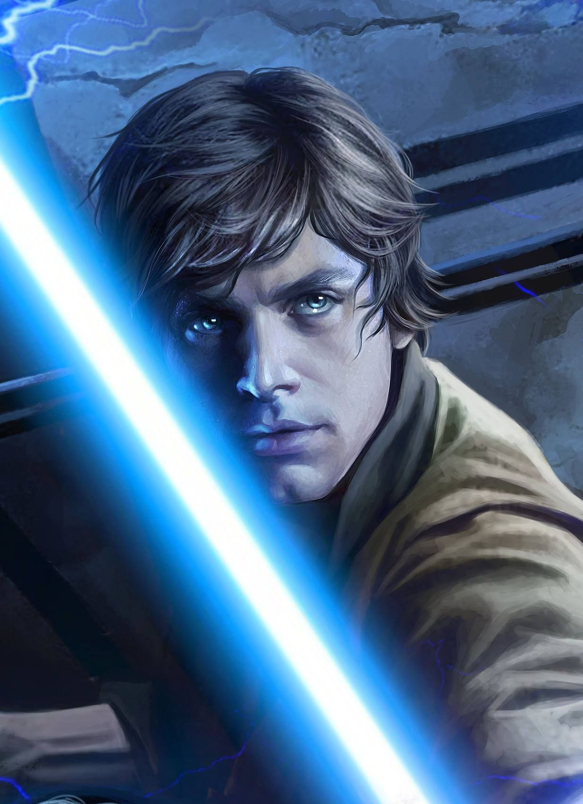
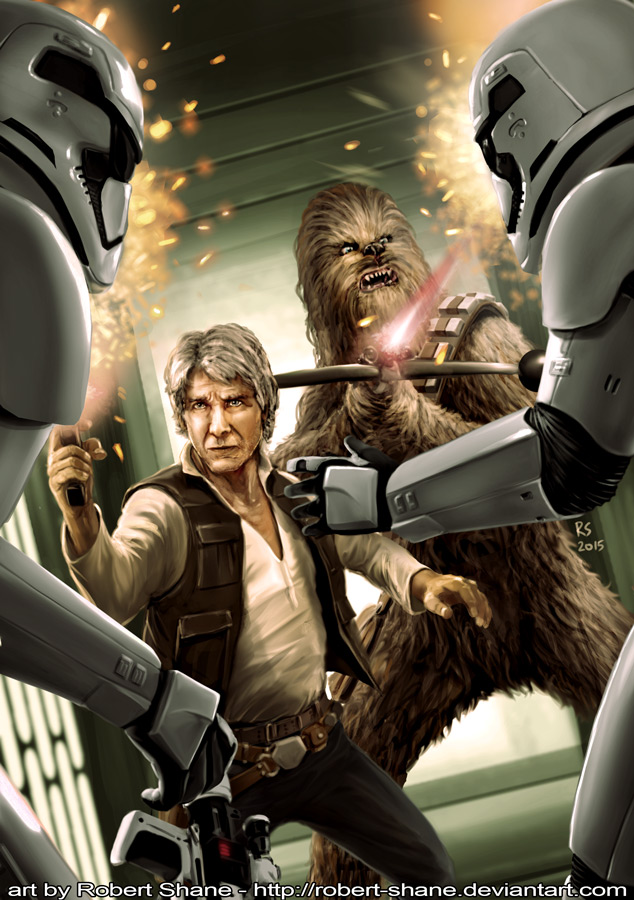
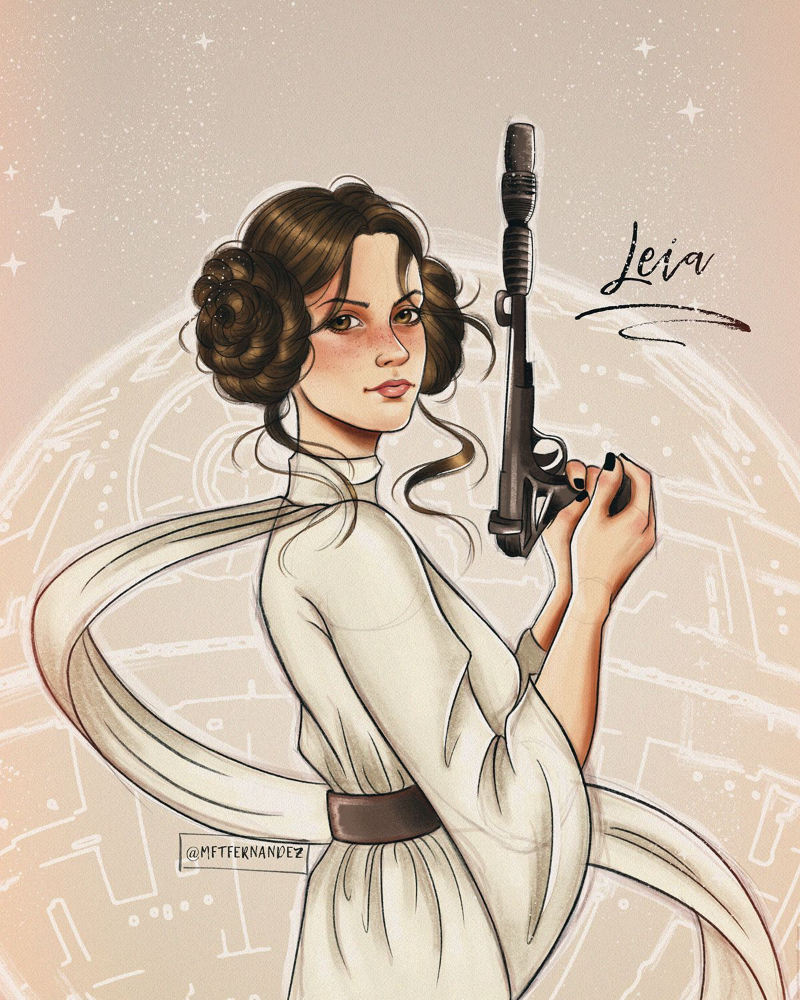
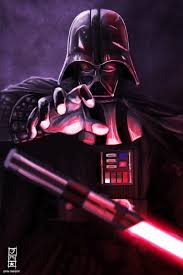
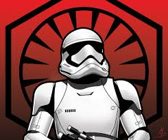
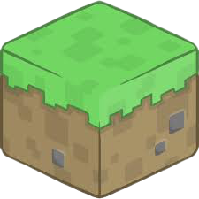

|  |
É o protagonista da trilogia original da série Star Wars, faz participação em Star Wars: O Despertar da Força em Star Wars: Os Últimos Jedi. É interpretado pelo ator norte-americano Mark Hamill. Um personagem essencial e importante na luta da Aliança Rebelde contra o Império Galáctico, é o irmão gêmeo da líder rebelde Princesa Leia Organa de Alderaan, foi amigo do mercenário Han Solo, aprendiz do Mestre Jedi yoda "mestre " yoda, e o filho do Jedi caído Darth Vader (Anakin Skywalker) e da Rainha de Naboo/Senadora da República Padmé Amidala. Ele é o tio e antigo mestre de Kylo Ren, antes deste ter se convertido ao Lado Negro da Força.Em 2008, o personagem foi escolhido pela revista Empire como o 54º maior personagem de filmes de todos os tempos. |
| |
|  |
Han Solo é um mercenário, nativo do planeta Corellia, mas residente em Tatooine. É proprietário da nave espacial Millennium Falcon, antigo cargueiro corelliano, modificado por Solo, descrita por ele como "a nave mais veloz da galáxia" e tem como co-piloto o wookiee Chewbacca. Precisando de dinheiro urgente para pagar o credor Jabba the Hutt, Han aceita transportar Luke Skywalker e Obi-Wan Kenobi para o planeta Alderaan. Porém, ao chegarem lá, só acham um cinturão de asteroides, pois o planeta foi destruído pela arma letal Estrela da Morte. E é para lá que a Falcon se dirige, sendo capturada pelo "raio trator". Han, Luke e Chewbacca resolvem ir ao resgate da Princesa Leia, que estava na área de confinamento. |
|  |
Leia é filha de Anakin Skywalker e Padmé Amidala, e irmã gêmea de Luke Skywalker. Assim que nasceu foi adotada em segredo por Bail Organa, membro da família real de Alderaan, para que fosse protegida das Forças Sombrias do Império Galático. Ainda muito jovem, ela uniu-se à Aliança Rebelde, na luta contra o Império Galáctico. Durante uma de suas missões, ela foi capturada pelo Império e presa em sua estação espacial, a Estrela da Morte. |
|  |
Darth Vader, nascido como Anakin Skywalker, é um dos personagens centrais da série de filmes Star Wars (Guerra nas Estrelas), tendo sido um dos protagonistas, juntamente com Obi-Wan Kenobi, da trilogia prequel (mas se tornando o vilão secundário no terceiro filme após a morte do General Grievous), um dos antagonistas principais da trilogia original ao lado do Imperador Palpatine (porém acaba se redimindo no final), e um anti-herói póstumo na trilogia de sequência, sendo que suas ações ainda afetam o universo de Star Wars, sendo para o bem ou para o mal, principalmente quando se trata de seu neto, Ben Solo, o Kylo Ren, que tem por Vader uma admiração cega, e deseja mais do que tudo ser como ele (e até superá-lo). |
|  |
Os Stormtroopers são a tropa de base do Império Galáctico no universo Star Wars. Devido à extenção do Império existem variações para diferentes terrenos e situações. Os Sandtroopers para os terrenos desérticos, Snowtroopers para terrenos congelados, Scouttroper para reconhecimento e pilotagem de Speeders entre muitos outros. |
|  |
|